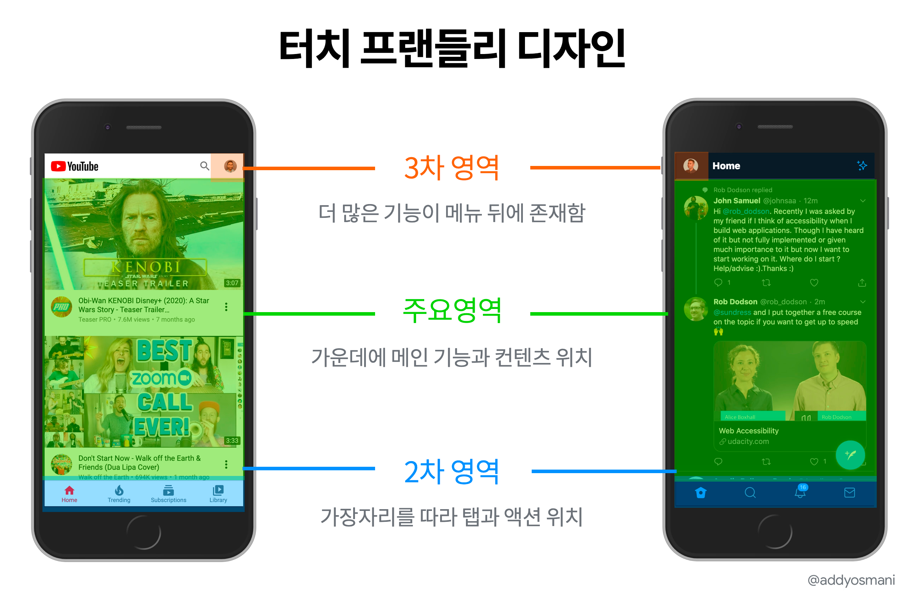
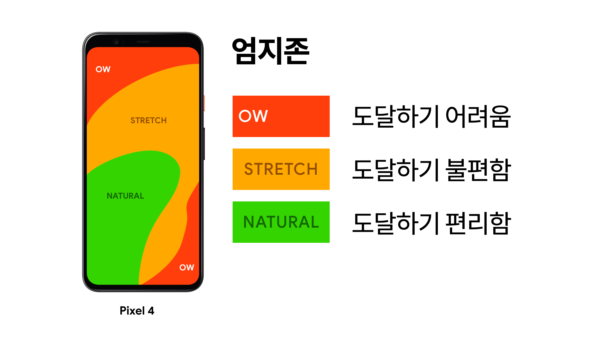
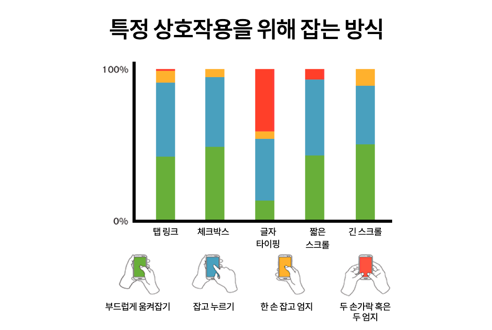
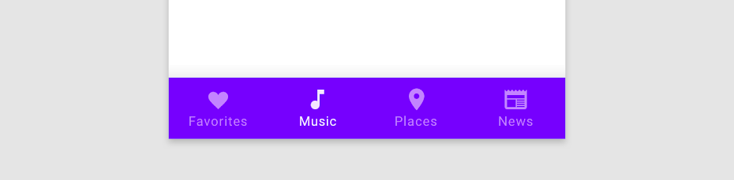

터치를 간편하게 만드는 방법은 무엇일까요? 저자는 스티븐 후버의 가이드라인을 기반으로, 터치를 쉽게 만드는 '터치 프랜들리 디자인'을 설명합니다.
📖 목차
터치 프랜들리 디자인
엄지존
특정 상호작용을 위해 잡는 방식
최근에 나는 베테랑 UX 디자이너 스티븐 후버(Steven Hoober)와 터치 인터페이스 디자인에 관해 이야기했다. "사람과 터치를 위한 손가락에 대한 설계"에서 후버는 UI 디자이너에게 다음과 같이 권유한다.
화면 중앙에 주요 콘텐츠와 액션을 배치
가장자리를 따라 2차 액션과 탭을 배치
3차 기능을 메뉴 배후에 배치
사용자의 구체적인 상호 작용 방법을 연구하자. 그립, 태스크, 콘텍스트 모두 핵심이다.
나는 앱에서 터치 친화적인 가이드라인을 따르려고 노력 중이다. 마찬가지로 이 방식을 다른 사용자에게도 추천한다. 다음은 유튜브와 트위터의 모바일 사이트에서 가이드라인에 대한 권고사항을 시각화한 것이다.

더 깊이 들어가 보자. 실제로 스티븐 후버의 터치를 위한 디자인 휴리스틱은 모든 디바이스에서 다음과 같다.
사람들이 한 가지 방식이 아닌, 다른 방식으로도 디바이스를 사용할 수 있도록 디자인
사람들은 화면의 중앙을 본다 - 핵심 콘텐츠를 중앙에 배치
사람들은 화면의 중앙을 터치한다 - 가능한 중요한 액션을 가운데로 배치
사람들은 자신이 보이는 것만 탭 한다. - 터치 대상 주변에 공간을 두어서 사용자들이 상태 변화를 보고 누를 수 있도록 하자.
사람들은 각각의 디바이스를 다른 방법으로 사용한다 - 사용자가 UI를 사용하는 방법에 대한 데이터를 모아라.
왜 여기에 관심을 가져야 할까? 터치 인터랙션에 대한 UX리서치 결과는 다음과 같다.
사용자의 75%는 엄지손가락 하나만으로 화면을 터치한다.
그러나 사용자의 49%는 한손으로 핸드폰을 사용하고, 36%는 떠받들어 잡고(한 손에 핸드폰, 다른 손으로 탭), 10%는 두 엄지 손가락을 사용한다. 75%의 숫자는 약간의 오해의 소지를 만들 수 있다.
한 손 사용자의 67%는 오른쪽 엄지손가락, 33%는 왼쪽이다.
스티븐 후버는 인터랙션 디자인 분야에서 적극적으로 목소리를 내왔고, 조시 클라크(Josh Clark)와 같은 사람들과 함께 "엄지 존(Thumb Zone)"의 초기 작업을 주도했다. 엄지존은 한 손으로 화면을 터치하기 가장 편한 영역이다.
그러나 2020년에는 엄지존을 지양하자!

최근 몇 년 동안, 우리는 사람들이 터치하는 방법이 미묘하게 바뀌었다는 걸 알게 되었다. 모든 사용자가 엄지 존을 따라 휴대폰을 사용하는 것은 아니다. 스티븐의 연구결과는 내가 따르고 싶은 새로운 가이드라인을 알려준다.
사용자는 다양한 방식으로 휴대폰과 상호작용한다. 따라서 사용자가 기기를 사용하는 다양한 방식을 고려하여 디자인해야 한다. 보편적으로 사용자는 주어진 과제와 상황에 따라 다른 유형으로 휴대폰을 잡는 방식을 변경한다. 또한, 손가락을 움직여서 엄지손가락이 닿을 수 있는 화면 영역을 바꿀 수 있다.

사용자들은 화면 중앙을 정말 좋아한다!
스티븐 후버의 연구에 따르면 사용자는 자신에게 선택권이 주어졌을 때, 화면 중앙에 있는 콘텐츠를 누르는 걸 선호한다고 강조했다. 그는 다른 화면으로 이동하는 경로를 제공하는 보조 옵션이 화면의 상단과 하단에 배치되어야 한다고 말한다.

위 하단 바는 머터리얼 디자인을 잘 적용한 사례 중 하나다. 하단 내비게이션은 가장자리에 가까이 있으며, 주요 작업에 대한 편리한 접근 방식을 제공한다.
마무리
스티븐 후버의 가이드라인을 모두 읽어보라고 권할 수는 없다. 그러나 파트 1, 2, 3은 꼭 체크해봐라. 아주 훌륭하다.
핸드폰을 쥐고 엄지로 편히 터치할 수 있는 영역을 말하는 엄지존. 이 개념을 널리 알린 스티븐 후버가 2020년, 엄지존에 대한 새로운 시각을 제시합니다. 사용자들이 가장 선호하는 영역이 화면 중앙이라는 것이 저에게는 새로운 인사이트가 되었는데요. 터치와 사용성, 이 둘의 상관관계를 다시 되새길 수 있는 좋은 경험을 여러분께 공유하고자 이 글을 선정했습니다.